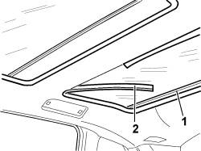

7030B32 SLIDING ROOF DECORATIVE SEAL(1) FRONT OR REAR - R R
- Path
- Procedures > 70 FITTINGS > 7030 SUN ROOF/GLASS PANEL > 7030B SLIDING ROOF > 7030B32 SLIDING ROOF DECORATIVE SEAL(1) FRONT OR REAR - R R
- Kind
- repair procedure (removal / refitting; the operation number is the code)
- Applies to
- all engines; all production periods
- Interactive page
- https://sloeber94.github.io/elrnDB-fCrm/en/#/194000977
Applies to: all engines; all production periods
 Removing
Removing
 Refitting
Refitting1. Open the sun blind.
2. Prise out the seal starting from the joint at the front.

Applies to: all engines; all production periods
Refitting
RemovingCheck that the seal is not damaged.
Fit the seal, starting at the join which should be in the centre at the back.
Check that the blnd is working properly.